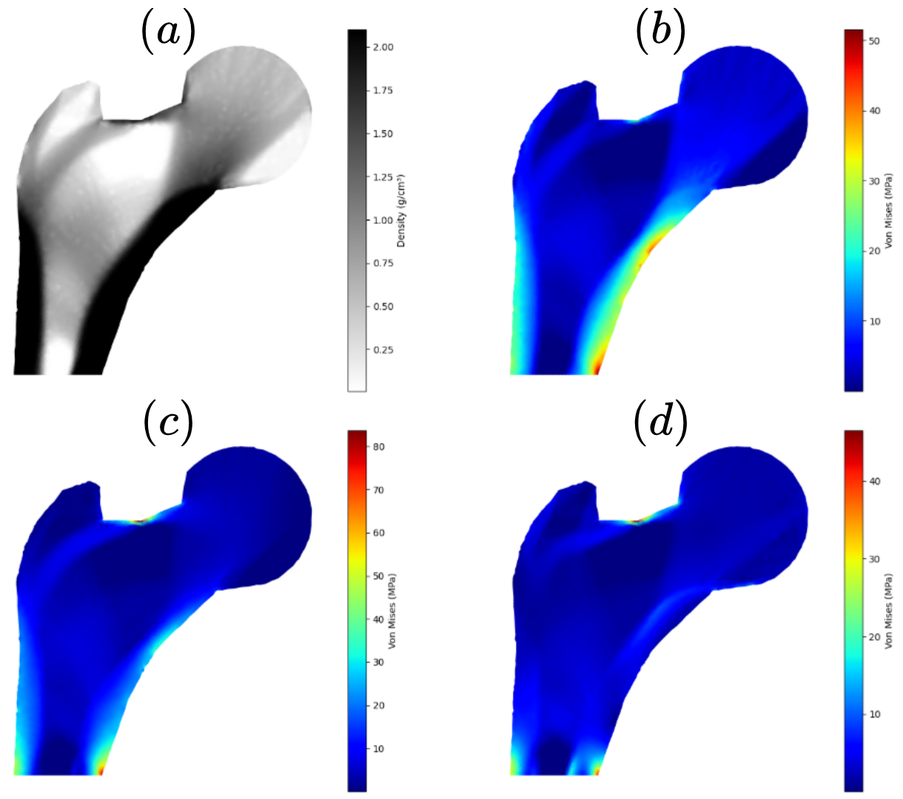
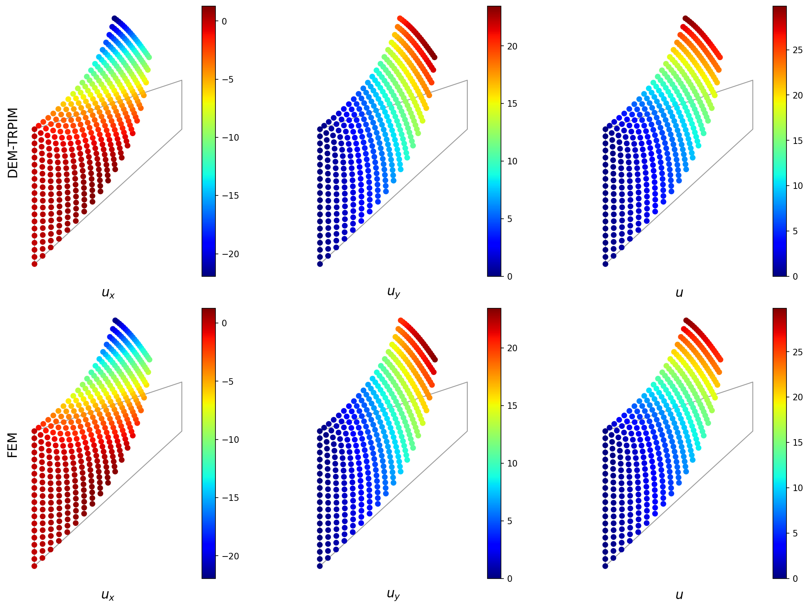

RESEARCH
As a dedicated scientific researcher, my general interest lies in the broad areas of AI & Data Science for Health, Numerical Analysis in Biomedical Engineering and Biomechanics. More specifically, I am working on the following research topics: (1) Numerical methods in simulating mathematical models of soft tissues and bone remodeling algorithms; (2) Brain-Computer Interfaces (BCIs); (3) Machine learning (ML) and Deep Learning (DL) in biosignal; (4) Statistical modeling of neural codes. Some of my research projects are summarized below, and you can read the full list on the Publications page.

Feature Extraction in EEG Signals and Brain-Computer Interfaces
Brain-Computer Interfaces (BCIs) translate electroencephalogram (EEG) signals into computational commands for neurorehabilitation and assistive robotics. We develop machine learning pipelines (Bi-LSTM, Transformers) for P300 event detection and activity recognition, integrated with Paillier homomorphic encryption to ensure patient neural privacy during cloud computing.
- Deep Learning Architectures: LOSO-validated Bi-LSTM and self-attention Transformer networks for robust temporal EEG decoding and artifact rejection.
- Homomorphic Encryption: Paillier additive cryptosystem enabling encrypted signal classification without exposing raw brain dynamics.


Bone Remodelling Algorithms using Numerical Meshless Method
Bone remodeling dynamically adapts internal bone density to mechanical strain energy density (SED). We develop advanced meshfree methods that eliminate mesh distortion inherent in standard FEM, yielding high-accuracy predictions of proximal femur density evolution for orthopedic implant design and bone disease assessment.
- Tchebychev-RPIM (TRPIM): Merges radial basis functions with orthogonal Tchebychev polynomials to prevent matrix ill-conditioning.
- Adaptive Biomechanical Remodeling: Predicts cellular bone adaptation and trabecular architecture evolution under daily physiological contact loads.



Hyperelastics Mathematical Model Predict Nonlinear Behavior of Human Skin
Human skin and soft tissues exhibit strong nonlinearity, anisotropy, and incompressibility under large deformations. We investigate anisotropic constitutive hyperelastic models (Mooney-Rivlin, Ogden, Gasser-Ogden-Holzapfel) and develop Scientific Machine Learning (SciML) frameworks—integrating Kolmogorov-Arnold Networks (KAN) into Deep Energy Methods (DEM)—for surgical robotics and tissue mechanics.
- Constitutive Formulations: Multilayer dermis formulations capturing collagen fiber orientations and stretch limits under mechanical stress.
- SciML & Deep Energy (DEM): Finite element-integrated fractional KAN networks solving variational large-deformation hyperelasticity without mesh distortion.
The best thing to do is always to follow your greatest desire
- Lucifer Morningstar (Lucifer Season 3) -